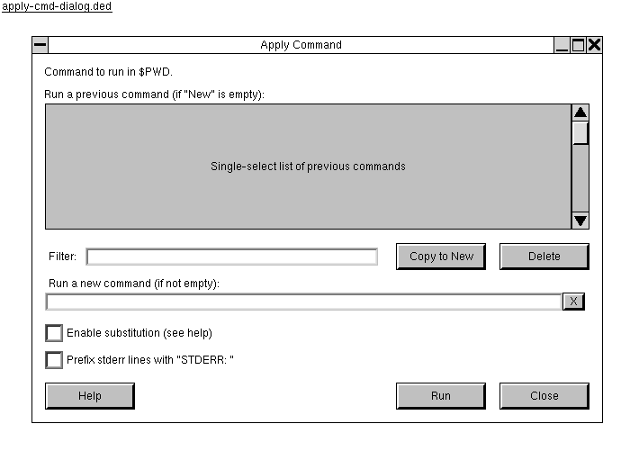

The "Apply Command" dialog allows the user to specify a command line to run. 
The dialog has these controls, laid out from top to bottom:
prevCommands: List box containing the previously run command lines,
less any subsequent deletions. Initially, the most recently run
command is selected, such that the user can open the dialog and
immediately hit Enter to run that command.
copyToNew: Push button with label "Copy to New" and hotkey Alt+C.
This copies the text of the selected item in prevCommands into the
newCommand box, overwriting the latter's contents.
deleteSelected: Push button with label "Delete" and hotkey Alt+D.
This deletes the selected item in prevCommands from the list.
newCommand: Single-line edit box containing a command to run.
This box expands to fill the horizontal space.
clearNewCommand: Push button with label "X" and hotkey Alt+X
that clears the newCommand box. Its width is the minimum
needed to show its label.
enableSubstitution: A checkbox with label "Enable substitution (see
help)" that alters the interpretation of the command line. Its
hotkey is Alt+S.
help: Push button "Help" that opens a message box with help
info. It is aligned to the left side of the dialog. Its hotkey
is Alt+H.
run: Push button "Run" that closes the dialog and runs the chosen
command, which is the text of newCommand if that is not empty,
and the selected item in prevCommands if one is selected. If
newCommand is empty and nothing is selected in prevCommands
then the Run button does nothing (not even close the dialog).
The Run and Close buttons are aligned to the right side of the
dialog, horizontally adjacent to each other. Its hotkey is
Enter; pressing Enter anywhere in the dialog activates it.
close: Push button "Close" that closes the dialog without further
action. However, deletions from prevCommands persist. Its
hotkey is Esc.
Summary of hotkeys:
copyToNew.
deleteSelected.
help.
newCommand.
prevCommands.
enableSubstitution.
clearNewCommand.
run.
close.